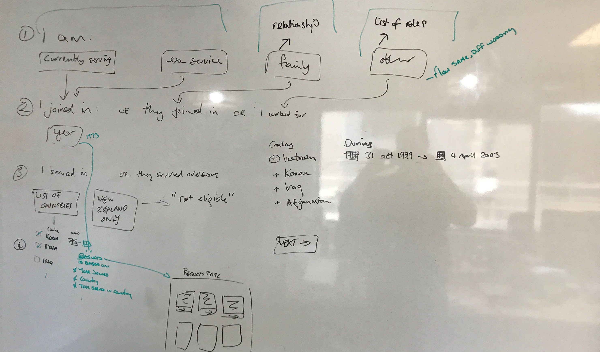
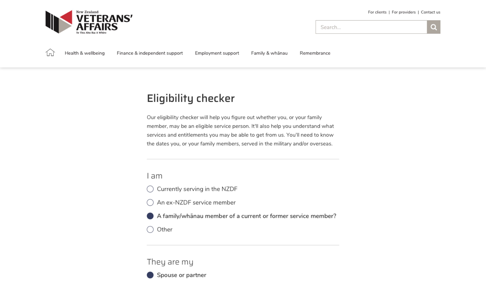

Projects > Veterans' Affairs
I was asked to help Veterans' Affairs redesign their website with a refined information architecture, new online style guide (borrowing from their print style guide). Most importantly, though, I was asked to design an eligibility checker for veterans – helping them determine if they were eligible for any financial help from the government.
Going through various workshops to nail down the requirements for the Checker, we landed on a flow that worked.
Planning out the eligibility checker – with all the different paths one could take.
From there, the most pressing item was designing the checker along with the rest of the site using a series of wireframes and UI designs. There was a clear style – fonts and colours – needing to be adhered to, but there was freedom to improve the style and flow of their outdated website.
Early wireframe for the eligibility checker.
Extensive testing was implemented on the Checker throughout Veterans' Affairs and current/ex-military personnel to ensure (a) the design was easy to follow, and (b) the results that came back were helpful.
© Andi Parker. All rights reserved.